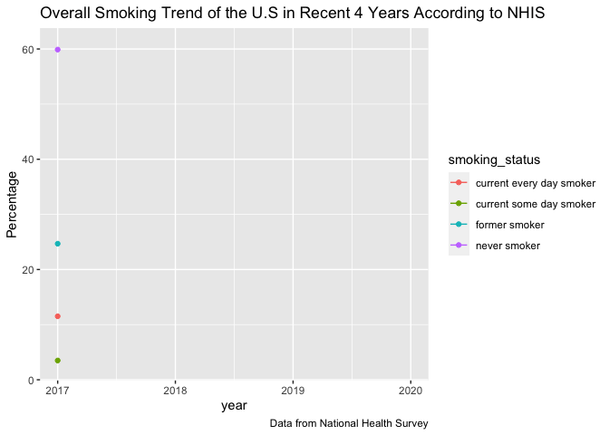

For year between 2017 and 2020, the percentage of people answering “no” was much higher than that of people answering “yes”. There is no obvious percentage change in the proportion of people smoking more than 100 cigarettes vs people who are not in the past 4 years. The ratio of percentage in people smoking more than 100 versus to people who are not is always 6:4.
 The Overall smoking trend: There is a slightly increase in percentage of former smoker and never smoker from 2017 to 2020.The percentage of former smoker increased from 24.6% to 25.8%. The percentage of never smoker increased from 59.9% to 60.9%.Meanwhile, the percentage of current smoker and current everyday smoker were slightly decreased, they decreased by 2.0% and 0.7% respectively.
#smokers' sex proportion
plot1 = bind_rows(a1,b1,c1,d1) %>%
count(year, sex) %>%
drop_na() %>%
ggplot(aes(fill=sex, y=n, x=year)) +
geom_bar(position="stack", stat="identity") +
scale_fill_viridis(discrete = T)+
labs(title = "Total smoker sum in different sex over the 4 years",y = "smoker sum", caption = "Data from National Health Survey")
ggplotly(plot1)!!Interesting fact : There is more male smokers than the female smokers! In the past 4 years, it can be seen that the total sum of male smoker is higher that of female smoker.
!!Interesting fact: Among all the smokers, most of the smokers are aged 56-65! There are not much smokers among the youth aged 18-25! The age group 18-25 has the least smokers, whereas age group 56-65 has the most smokers.
This is a graph showing total sum of smokers among different race. This can only be a reference since the population with respective to each race is not taken into consideration. In the following graph the proportion of smokers among different race, sex and agegroup will be shown.